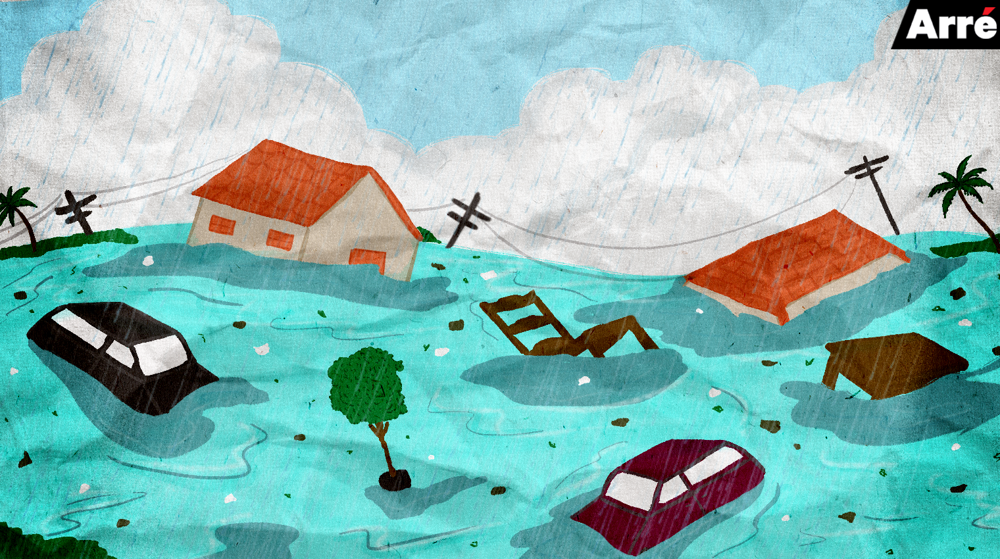
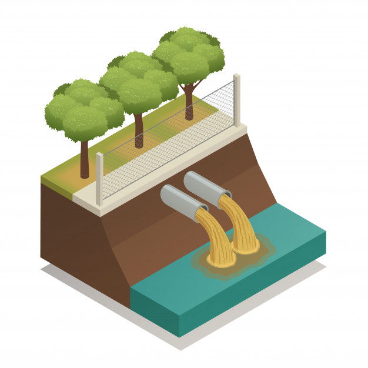
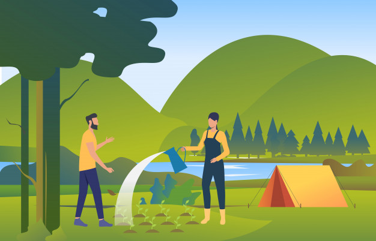

• ວິທີການຮັບມື ແລະ ການແກ້ໄຂບັນຫານ້ຳຖ້ວມ.
ບັນຫາເລື່ອງນ້ຳຖ້ວມສ່ວນໃຫຍ່ໃນປະເທດລາວເຮົາຈະບໍ່ຄ່ອຍພົບເຫັນ ຫຼື ເກີດຂື້ນໜ້ອຍ ແຕ່ກໍບໍ່ໄດ້ໝາຍຄວາມວ່າມັນຈະບໍ່ເກີດຂື້ນເລີຍ ເພາະເນື່ອງຈາກໃນປັດຈຸບັນປະເທດລາວໄດ້ມີການພັດທະນາຂື້ນເລື່ອຍໆ ແລະ ໄດ້ມີການສ້າງເຂື່ອນຫຼາຍຂື້ນ ເຮັດໃຫ້ມີຄວາມສ່ຽງໃນການປະສົບອຸທົກກະໄພຈາກທັງນ້ຳມືຂອງມະນຸດ ແລະ ທຳມະຊາດ ໃນປີທີ່ຜ່ານມາ 2018 ໄດ້ເກີດເຫດການສັນເຂື່ອນເຊປຽນແຕກ ທີ່ເມືອງສະໜາມໄຊ ແຂວງອັດຕະປື ເຊິ່ງໄດ້ສ້າງຄວາມເສຍຫາຍຢ່າງຫຼວງຫຼາຍແກ່ຊີວິດ ຊັບສິນຂອງປະຊາຊົນ ຫຼ້າສຸດປີ 2020 ນີ້ໄດ້ເກີດມີໄພນ້ຳຖ້ວມເກືອບທົ່ວທຸກພາກໃນປະເທດລາວ ໂດຍສະເພາະແມ່ນ ແຂວງໄຊຍະບູລີ ແລະ ສະຫວັນນະເຂດທີ່ໄດ້ຖືກຜົນກະທົບຢ່າງໜັກໜ່ວງ ແລະ ແຂວງອື່ນໆກໍໄດ້ຮັບຜົນກະທົບເຊັ່ນກັນ ໃນບັນຫານີ້ຍັງຖືວ່າພວກເຮົາແກ້ໄຂບັນຫາຍັງລ່າຊ້າ ເຊິ່ງໄດ້ແກ່ຍາວຜົນກະທົບໄປຕື່ມ ເພື່ອເປັນການຮັບມື ແລະ ການແກ້ໄຂບັນຫານ້ຳຖ້ວມ ພວກເຮົາຈຶ່ງຈະນຳສະເໜີວິທີທີ່ຈະຊ່ວຍແກ້ໄຂ ແລະ ຕ້ານບັນຫານ້ຳຖ້ວມນີ້ເພື່ອຫຼຸດຜ່ອນຜົນກະທົບ ແລະ ຜົນເສຍຫາຍທີ່ຂະເກີດຂື້ນກັບປະຊາຊົນດັ່ງຕໍ່ໄປນີ້.
1. ສ້າງຮ່ອງລະບາຍນ້ຳ.
ສ້າງຮ່ອງລະບາຍນ້ຳ ສ້າງ ແລະ ປັບປຸງຮ່ອງລະບາຍນ້ໍາຕາມເສັ້ນທາງໃຫ້ສາມາດຮັບຮອງການລະບາຍນ້ໍາໄດ້ສະດວກຂື້ນ, ໝັ່ນກວດສອບ ແລະ ປົວແປງໃຫ້ຢູ່ໃນສະພາບພ້ອມລະບາຍນ້ໍາຢູ່ຕະຫຼອດເວລາ. ເນື່ອງຈາກຖະໜົນຫົນທາງເປັນສິ່ງກໍ່ສ້າງຈາກຊີມັງທີ່ບໍ່ສາມາດດູດຊືມນ້ຳໄດ້ ຈື່ງຕ້ອງອາໄສການລະບາຍນ້ຳຜ່ານຮ່ອງລະບາຍເພື່ອບໍ່ໃຫ້ເກີດນ້ຳຂັງໃນເວລາດົນ.
2. ສ້າງອ່າງເກັບນ້ຳ.
ເພື່ອເປັນບ່ອນກັກເກັບນ້ໍາໄວ້ໃນຊ່ວງເວລາຊົ່ວຄາວ ຈາກການລະບາຍນ້ຳມາຈາກແຫຼ່ງນ້ຳຂະໜາດໃຫຍ່ ເນື່ອງຈາກປະເທດລາວເປັນປະເທດທີ່ມີປະລິມານເຂື່ອນຜະລິດໄຟຟ້າຫຼາຍ ເຊິ່ງອາດຈະມີການລະບາຍນ້ຳອອກ ແລະ ຈື່ງສາມາດລະບາຍນ້ຳ ແລະ ກັກເກັບນ້ຳໄວ້ໄດ້ ແລະ ຍັງນຳໃຊ້ເພື່ອການກະສິກຳອື່ນໆອີກໄດ້.
3. ການປູກຕົ້ນໄມ້.
ເປັນທີ່ຮູ້ກັນດີວ່າຕົ້ນໄມ້ນັ້ນມີຄຸນປະໂຫຍດຫຼວງຫຼາຍ ທັງຜະລິດອອກຊິເຈນ ແລະ ດູດຊຶມກາສຄາບອນໄດອອກໄຊ, ທັງຮາກຂອງຕົ້ນໄມ້ສາມາດໃຫ້ຄວາມຊຸ່ມຊື່ນແກ່ພື້ນດິນ ແລະ ຍັງສາມາດຍຶດເກາະພື້ນດິນ ປ້ອງກັນການກັດເຊາະ ດິນເຈື່ອນ ແລະ ຍັງສາມາດດູດຊັບ ແລະ ກັກເກັບນ້ຳໄດ້ເປັນຢ່າງດີ. ດັ່ງນັ້ນເຮົາຄວນປູກຕົ້້ນໄມ້ໄວ້ໃດ້ໄດ້ຫຼາຍທີ່ສຸດເພື່ອປ້ອງກັນໄພນ້ຳຖ້ວມບໍ່ຫຼາຍກໍໜ້ອຍ.
ຂໍຂອບໃຈເອກະສານອ້າງອີງ ແລະ ຮູບຈາກ:
- https://greennews.agency- https://www.greenpeace.org
- https://www.seub.or.th
- https://lifestyle.socialgiver.com
- https://www.reanrooclimatechange.com
- https://www.freepik.com
- https://undraw.co
- https://climate-science.com
- https://today.line.me/th/v2/
- https://www.greenpeace.org/thailand/